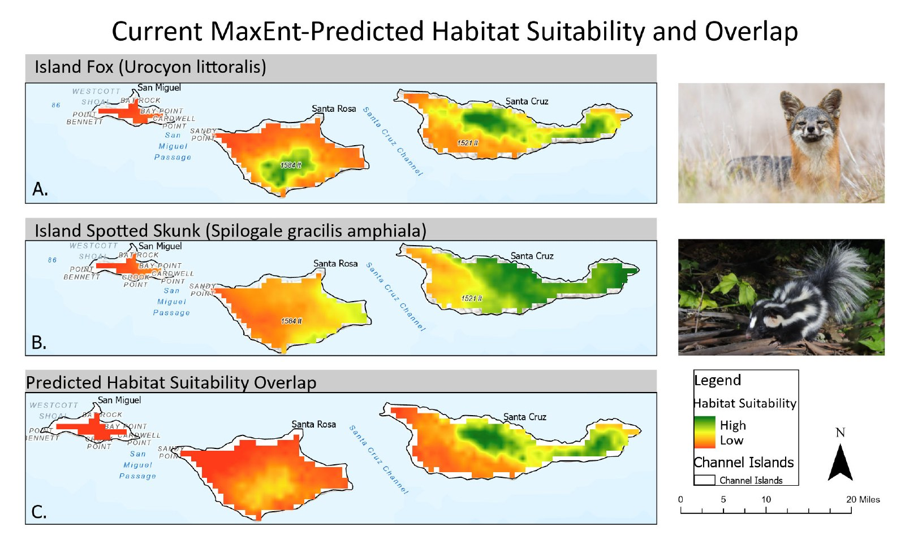
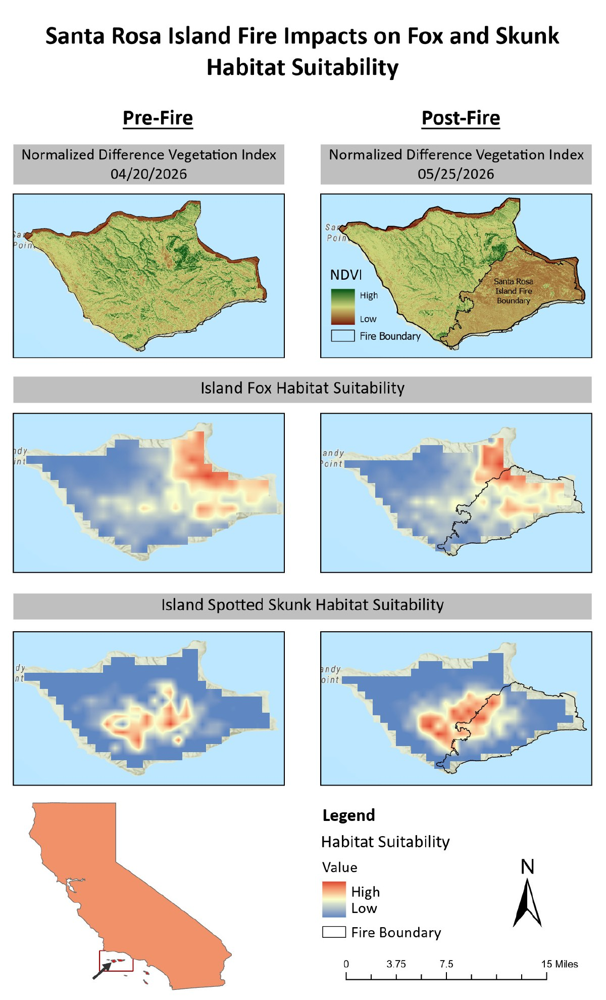
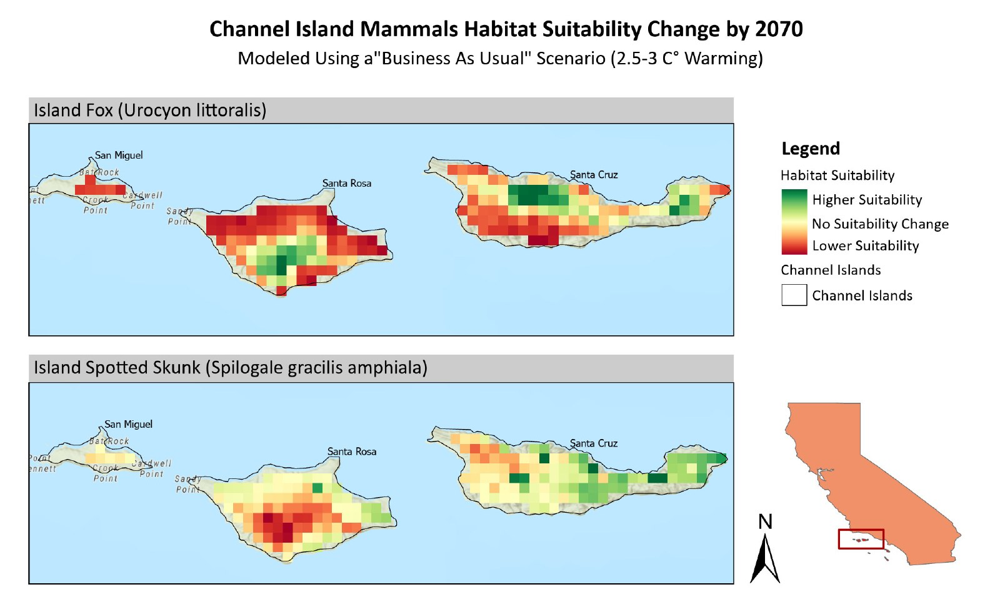
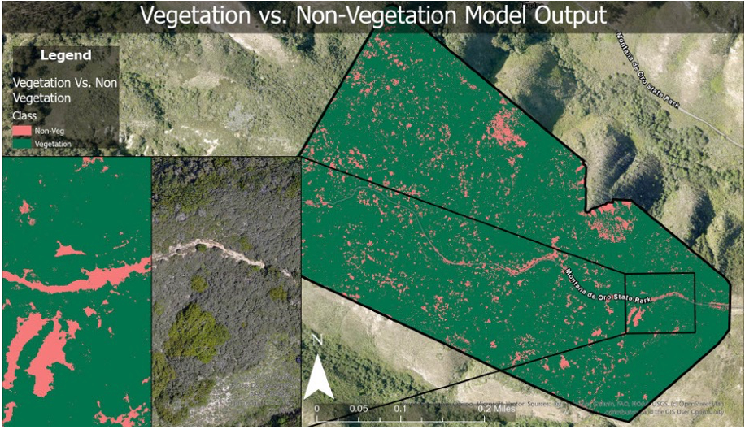

Climate-driven habitat analysis for two endemic Channel Islands mammals.

Current MaxEnt-predicted habitat suitability and geographic overlap for Island Fox and Island Spotted Skunk.
Climate-driven range analysis of Channel Islands mammals.
For this project, I modeled present and future habitat suitability for the Island Fox (Urocyon littoralis) and Island Spotted Skunk (Spilogale gracilis amphiala) across the northern Channel Islands. These isolated ecosystems have high occurrences of endemic species and are shaped by varied terrain, a Mediterranean climate, and increasing environmental change.
Using MaxEnt, I mapped current habitat suitability and projected how it may change under a business-as-usual warming scenario of 2.5–3°C by 2070 and 2100. I also evaluated the short-term effects of the May 2026 Santa Rosa Island Fire by comparing pre- and post-fire NDVI ( Normalized Difference Vegetation Index) in the models.
The analysis showed that the two species may respond differently to future conditions despite overlapping geographic ranges. It also suggested that the short-term vegetation loss from the fire had less influence on predicted suitability than the broader climate, land-cover, vegetation-structure, and topographic conditions included in the model.




Data collection grounded in place.
Field-based ecological monitoring and restoration work that connects on-the-ground observations with useful, enduring spatial records.

Restoration monitoring in the Eastern Sierra.
Meadow, trail, and campsite monitoring across two field seasons, supporting future restoration planning along the John Muir Trail.
View fieldwork →Fieldwork in Chile.
A future fieldwork project will be added here.
Other projects.

Monitoring eelgrass from the air
Collaborative research using multi-year drone imagery and semantic segmentation to support high-resolution eelgrass monitoring in Morro Bay.
View research →
Mapping threatened Morro manzanita
Used drone imagery, segmentation, and deep learning to identify shrub-dominated vegetation patterns in Montaña de Oro State Park.
View project →
Glacial retreat in Glacier National Park
Mapped satellite-derived glacier extent from 2000 to 2023 to visualize park-wide ice loss.
View project →